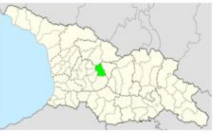
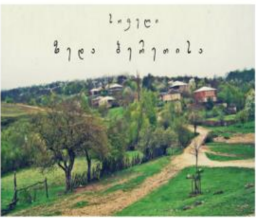
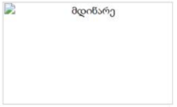

| სოფელი ბერეთისა - ჭიათურის მუნიციპალიტეტში მდებარეობს. ზღვის დონიდან 840 მეტრი, ჭიათურის რაიონული ცენტრიდან 24 კილომეტრში. სოფელში არის საშუალო სკოლა, საფეხბურთო მოედნები. სოფელში მდებარეობს რამოდენიმე ეკლესია. რომელთაგან ერთი არის XIX საუკუნის ეკლესია. |
ღირსშესანიშნაობები | |
|  რუკა |
 სოფელი ბერეთისა |
|
|  | ||
| ყველა უფლება დაცულია | ||